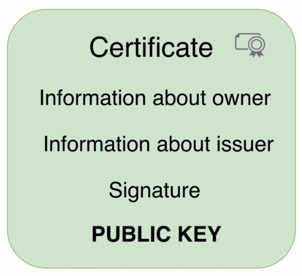
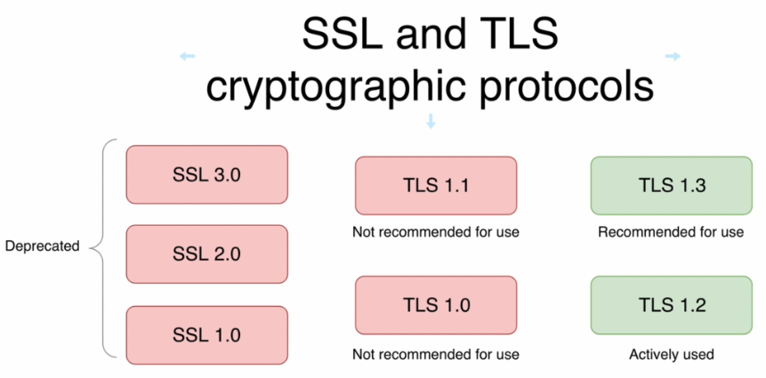
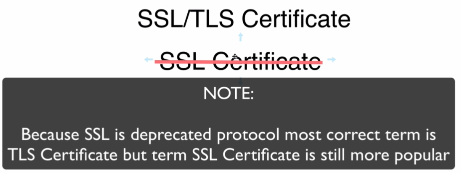
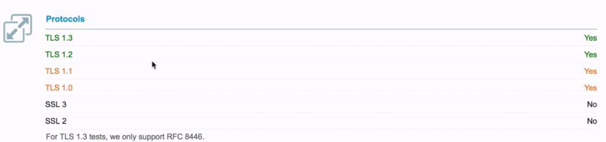
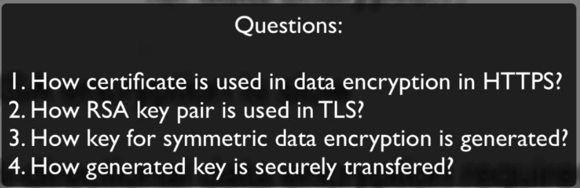
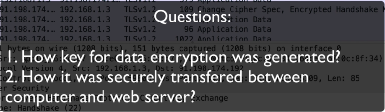
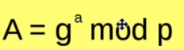

-->the certificate isn't used itself for encryption of data between the web browser and web server and that's where SSL and TLS cryptographic protocols comes in

SSL-->Secure Sockets Layer
TLS-->Transport Layer Security
Question
Does certificate depend on SSL, TLS and does it require which protocol exactly must be used??
Answer:
-->Certificate doesn't depend on specific protocol (TLS or SSL) and could be used for both
-----------------------------------------------------------
History

-->that's why SSL Certificate is incorrect term



-->it's recommended to disable TLS 1.0 and TLS 1.1 Protocols
-----------------------------------------------------------
Why RSA is not used in HTTPS for data encryption?
1-RSA encryption is slow
2-Bi-directional data encryption requires RSA key pairs on both sides
So how data is encrypted in https??
-->and that when TLS comes in where we encrypt data using symmetric key

-----------------------------------------------------------
-->we now know that TLS use symmetric encryption so only one key which is private and known only by browser and web server

1-in negotiate cipher suite, browser sends to web server list of supported cipher suite and web server choose one of cipher suite
cipher suite-->is set of protocols that will be used in TLS communication for example each cipher suite specifies how symmetric key for data encryption will be generated also specifies which algorithm will be used for actual data encryption and decryption, also cipher suite include information about hashing protocol(it's usually sha algorithm)
2-after negotiate cipher suite SSL/TLS Certificate is sent to browser, usually exculding root CA because it's assumed that root certificate are located at web browser side in (root certificate store in OS)
3-Certificate verification(
1-Verify sinature
2-Check validity period
3-Verify whether certificate was revoked or not
)
4-Generate symmetric key for data encryption and here things maybe different for different cipher suite, in some cases symmetric key will be generated on browser, another way of generation of symmetric key is by utilizing diffie-hellman key excahnge algorithm and in that case we don't encrypt communication because diffie-hellman key exchange algorithm is designed for generation of same key on both sides by encrypted public connection and when both sides possess same encryption key we can start sending and receiving actual data
------------------------------------------------------------

-->first in cipher suite is protocol that is used for communication it either TLS or SSL, next comes algorithm that is used for security generation usually it's diffie-hellman algorithm, then comes algorithm used for encryption like AES or CHACHA and finally algorithm of hashing like SHA

-----------------------------------------------------------

-----------------------------------------------------------

-->web browser enrypt random key using public key from web server
-->RSA key pair is "static" and isn't changed until certificate is renewed
-->so if anyone know the private key in web server he can decrypt data between web server and all clients
Summary: you should avoid using such key delivery whenever possible, RSA key pair should be used only for server authentication, it shouldn't be used for encrypt any sensitive data like secure key that is used for data encryption
-----------------------------------------------------------

NOTE: we didn't use public key of web server for any data encryption, the reason is simple, diffie hellman key exchange is designed exactly for such purposes for generation of secure key on both sides via public and secure network
-->after generate key on both side we can start encryption between web browser and web server
-----------------------------------------------------------

-->this algorithm allows you to generate keys over insecure public connection
-->Nobody can generate same key why? because Diffie hellman algorithm uses one-way functions
-->once key generated, we use it in encryption and that's exactly what happens in TLS
-----------------------------------------------------------

-->you can result same numbers for different inputs
-----------------------------------------------------------

-->a,b are private keys and not transfered
-->g,p are public keys
-->Both public keys "g" and "p" are usually generated on one side to decrease quantity of messages between sites
-----------------------------------------------------------

1-symmetric relative to x axis
2-any line that you draw through it will cross the curve at least in two points but usually is three points and there a relation between those three points
-->with changing a,b we can change outline of the curve
-----------------------------------------------------------


yes
------------------------------------------------------------

-->we can use just two lines instead of three to find
-->if you know starting point and last point it's almost impossible to find out how many times point was added to itself
------------------------------------------------------------

Why it's not possible to get "n" knowing G and E?

-->same we can't know a knowing A,g,p

G-->is point on the curve
n,m-->are numbers
------------------------------------------------------------

ECDSA-->to prevent man in the middle attack